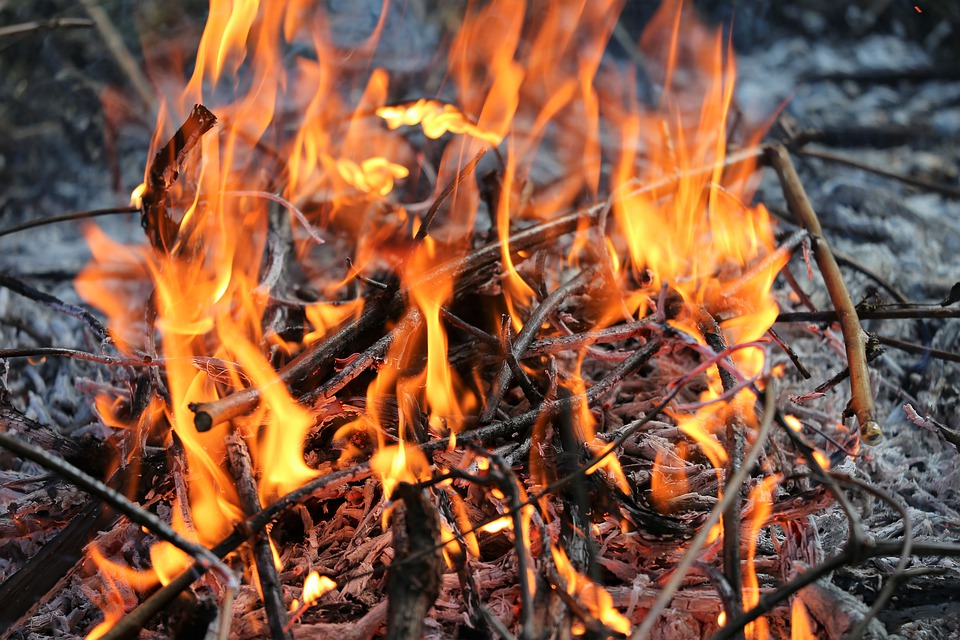

Tænd din indre kreative ild – og lad den brænde
23. apr 2020

Kender du det, at vågne tidligt og ha’ en brændende energi?
Kender du det, at brænde ud sidst på dagen og mangle energi?
For tiden tænder jeg en del bål i min have. Små og store bål, til skumfiduser, til brændenældesuppe. Til hygge og afbrænding.
Jeg har glædet mig over at skabe bålene, tænde dem, bruge dem og siden stirre ind i flammerne. Mærke varmen, se lyset og fornemme kraften i ilden.
Det har fået mig til at reflektere over, hvordan jeg tænder mit indre bål af ild og kreativitet.
Og hvordan får jeg det til at brænde stabilt og levende dagen lang, så det er til glæde for mig og andre?
At være fyr og flamme
Nogle dage er den der bare. Motivationen og inspirationen. Jeg kan sy og sy og går ikke død. Intet kan slå mig ud – selv ikke flere meters pillen op og fejl undervejs. Jeg fortsætter ufortrødent.
I denne tilstand er det næsten som at være “fyr og flamme”. Tiden flyver afsted og arbejdet føltes egentligt ikke som arbejde. Det føles somom der brænder en kreativ ild. Som vel at mærke er passende og som giver en vedvarende varme og energi til at være kreativ og skabende.
Andre dage er processen en helt anden sag. Så er det som om kræfterne ikke rækker. Og det mindste problem stopper mig og får mig til at lave en fejl, som måske afføder endnu en fejl. Og jeg bliver afsporet og må nogle gange slippe den givne opgave.
Ild og bål får os til at huske det vigtige
Det er på en måde ligesom at tænde et bål. Det kræver noget. Først og fremmest skal der brænde til. Ikke hvilket som helst brænde. Det skal ikke skal være for vådt eller stort for så kan det enten ikke brænde eller også kvæler det ilden. Og så skal der en tændstik til. Nogle gange flere. Og papir. Og alligevel lader et bål sig ikke altid tænde. Andre gange lader det sig i den grad tænde og brænder alt omkring sig ned.
I alle tider har vi mennesker været tæt knyttet til ild:
ild, symboliserer bl. a. det guddommelige, lutring og renselse, straf og frelse, død og genopstandelse eller forvandling, lidenskab og engagement, kærlighed og had og ødelæggelsestrang, vision og inspiration. Sammen med lys har ild udgangspunkt i den universelle ild og lyskilde, Solen (Den Store Danske, 2012).
I mindre målestok bruger vi ilden som lygter i form af stearinlys og lygter. Stadig er det at tænde lys en integreret del af vores grundlæggende samværsformer. Lyset minder os om, at noget er vigtigt. Når vi helligholder årstider eller menneskelige traditioner som eks. Sct Hans, begravelse, fester så er der oftest ild i et større eller mindre bål eller lys. Den olympiske flamme er et andet eksempel.
Betydningen af at brænde og tænde ild
Der er en grund til, at der er mange ordsprog og talemåder, der handler om ild:
- At være tændt og lade sig optænde
- At gå igennem ild og vand
- At bryde ud i lys lue
- At have ild i rumpetten
- At holde sig selv til ilden
Og endnu flere betydninger af at brænde:
- At brænde af
- At brænde fast
- At brænde fingrene
- At brænde igennem
- At brænde inde med
- At brænde ned
- At brænde op
- At brænde over
- At brænde på
- At brænde sig
- At brænde ud
Bål og ild kan bruges som en metafor i forhold til mange kunstneriske og kreative processer. Ligesom når vi tænder ild i et fysisk bål, kræver de kreative og skabende processer planlægning, forberedelse og udførelse. De forskellige elementer i bålet svarer til forskellige elementer i den kreative proces:
Hvordan gør du helt konkret
Bålpladsen: din kreative proces påbegyndes. Måske er det så enkelt som at finde posen med strikketøjet frem. Det kan også bestå i at klargøre arbejdspladsen. Måske skal der først ryddes op og rengøres efter sidste proces, så der er ryddeligt og rart til næste arbejdsproces. Kreativitet trives rigtig dårligt i rod, og så er det vanskeligt at tænde den indre ild.
Brænde: Materialer skal købes eller findes frem og lægges til rette. Passende materialer i en god kvalitet. Ikke for dårlige eller for billige. Hvis du bruger maskiner og redskaber, skal de også være i god stand. Det duer ikke at opstarte et håndværk eller håndarbejde på en symaskine, der ikke syer pænt. Det kan også være, at du skal tænke på mad og drikke.
Tændstikker: Det er tændstikker, der tænder ilden. Det 3. element, som hverken er bålpladsen eller brændet. Det kan handle om dit energiniveau: Har du sovet godt ? Har du lavet dine rutiner, bevidstgjort hvad du vil i dag. Hvordan er dit humør og overskud? Din fysiske og psykologiske balance? Du kan tilsætte disse elementer til bålplads og brænde og derved skabe ilden.
Ilden: For at ilden kan brænde uophørligt undervejs, skal du fodre bålet passende. Ikke for meget og ikke for lidt. Ikke for store kevler som du lægger på bålet og så forlader det. Så vil ilden være kvalt undervejs. Her kommer bevidsthed, nærvær og pauser ind i billedet. Din planlægning af arbejdsprocessen kommer dig også til gode. Hvis du er startet hovedkuls og uden omtanke, kan du hurtigt brænde ud.
De kreative processer kommer ikke bare af sig selv. De er som et bål, der skal tændes og brændes. Og så skal det passes. Uophørligt og nærværende. Dagen lang.
God fornøjelse med den indre ild i dag !